SevenX is a digital currency that aims to be in every popular blockchain, making transactions and interoperability between different networks simple and efficient.
Don't know what network to use? Trying to choose between an EVM chain or Solana? Having trouble moving your funds from a network to another? SevenX solves this and more by being in many popular networks (currently supports Polygon and Solana) so you can easily move your funds from one network to another using the same token instead of having to move them to many different tokens and losing many of your hard earned money in the process.
If you encounter any issues or have any questions, feel free to open an issue in our GitHub repo and we will answer as soon as possible.